Спортивный клуб «НЕ СПАТЬ МОСКВА»
Как присвоить участнику звание, отправить ему именной сертификат, распечатать бланк и подтвердить подлинность. Пошагово, со снимками экрана.
Сделано в FutureFlowЗакрытая страница клуба под пин-кодом. Здесь вы создаёте сертификат и получаете ссылку для участника.
Персональная ссылка. Открывается у любого, кому её передали: посмотреть, распечатать, показать друзьям.
Открытая страница. По номеру и имени подтверждает, что звание действительно присвоено клубом.
| Студия выдачи | nespatmoskva.ru/certificate-studio.html — пин-код 1234 |
| Проверка подлинности | nespatmoskva.ru/certificate.html |
| Где хранятся сертификаты | Нигде: сертификат целиком зашит в ссылку и подписан ключом клуба. Базы данных нет, платить за неё не нужно. |
| Что нужно для работы | Любой браузер на компьютере или телефоне. Интернет — только чтобы открыть страницу. |
Откройте nespatmoskva.ru/certificate-studio.html и введите пин-код 1234.
Пока вкладка открыта, пин больше не спросят. Кнопка «Выйти» в правом верхнем углу закрывает доступ — нажимайте её, если работаете с чужого компьютера.
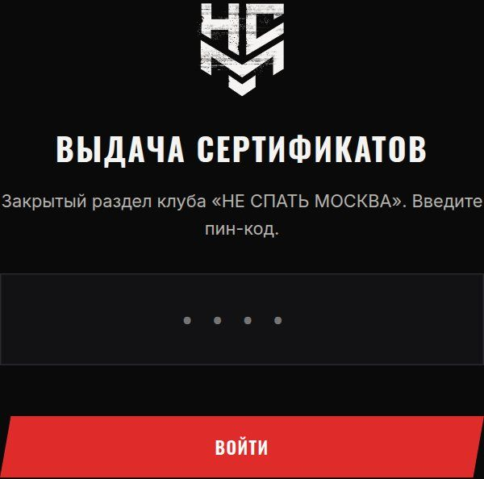
Имя и фамилия — ровно так, как будет напечатано на бланке. Имя входит в подпись сертификата, поэтому потом его не изменить: проверьте перед выдачей.
Звание — нажмите нужное из семи. Бланк сразу перекрасится в цвета этого звания.
Дата выдачи — по умолчанию сегодняшняя.
Комментарий — необязательная строка под девизом, например «за победу на турнире клуба».
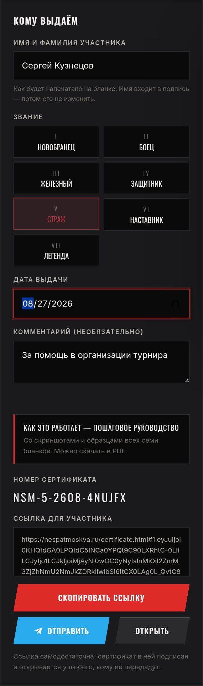
Справа виден живой предпросмотр — ровно то, что увидит участник и что уйдёт на печать. Меняете имя или звание — бланк перерисовывается сразу.
Убедитесь, что имя без опечаток, звание верное, а дата та, что нужна.
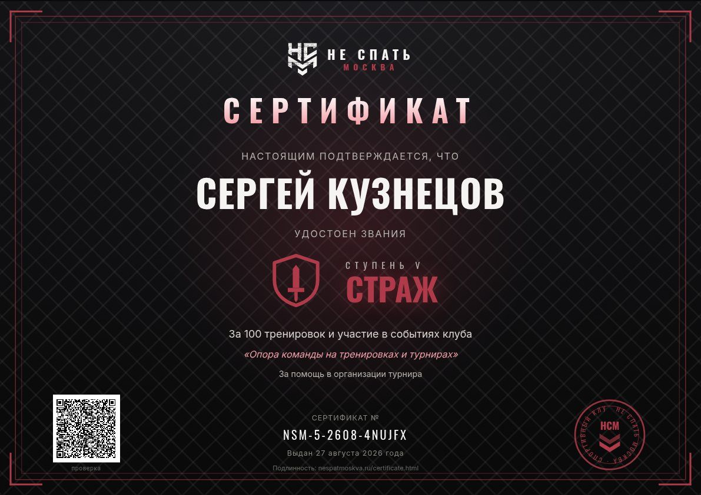
Под формой появятся номер сертификата (например NSM-5-2608-4NUJFX) и ссылка для участника.
Скопировать ссылку — положить в буфер обмена.
Отправить — открыть Telegram с готовым поздравлением.
Открыть — посмотреть сертификат так, как его увидит участник.
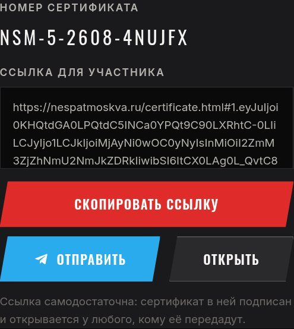
Отправьте ссылку любым способом — Telegram, WhatsApp, СМС. Сертификат откроется у любого, кто её получит.
Все выданные сертификаты складываются в список «Выданные сертификаты»: оттуда можно заново скопировать ссылку, открыть бланк или убрать запись.
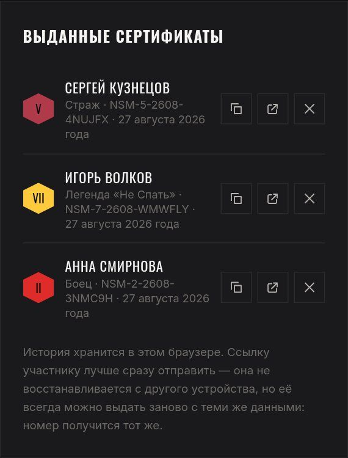
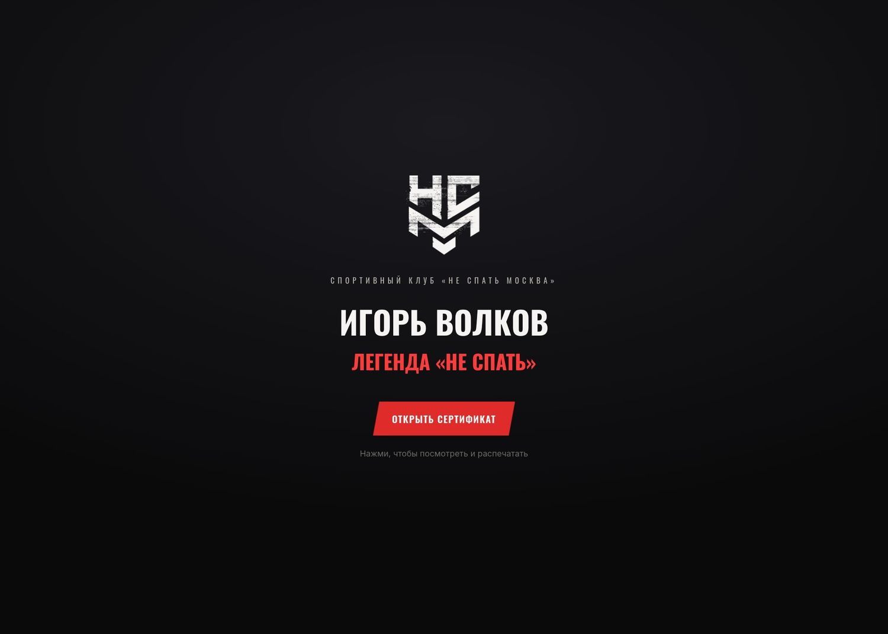
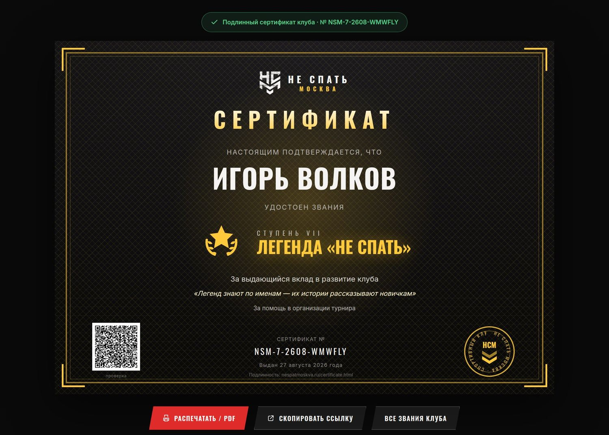
Под бланком участник видит кнопки: «Распечатать / PDF», «Скопировать ссылку» и «Все звания клуба», а также карточки с данными сертификата. На телефоне бланк можно нажать — он раскроется во весь экран, повёрнутый по ширине.
Нажмите «Распечатать / PDF» на странице сертификата (или в студии — кнопка под предпросмотром). Откроется обычное окно печати браузера.
Альбомная. Браузер подставит её сам, но если этого не произошло — выберите вручную.
Включите «Печать фона» (Background graphics). Без этого бланк напечатается белым, без фирменного тёмного фона.
Поставьте «Нет» / «Без полей», чтобы бланк занял весь лист.
На печатном бланке слева внизу есть QR. Наведите камеру телефона — откроется цифровой оригинал с отметкой подлинности.
Откройте страницу проверки, введите номер с бланка и имя владельца. Подходит, когда на руках только бумага.
Просто откройте ссылку: страница сама пересчитает подпись и покажет, подлинный сертификат или подделан.
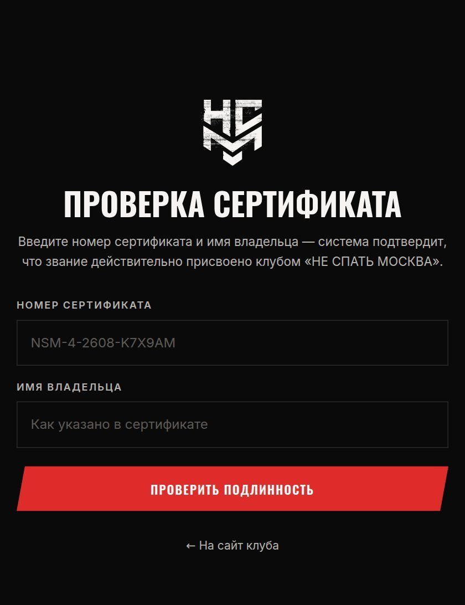
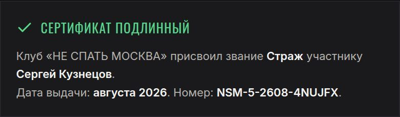
Проверка не придирается к мелочам: регистр букв, лишние пробелы и «е» вместо «ё» не помешают. Но чужое имя или выдуманный номер система не подтвердит.
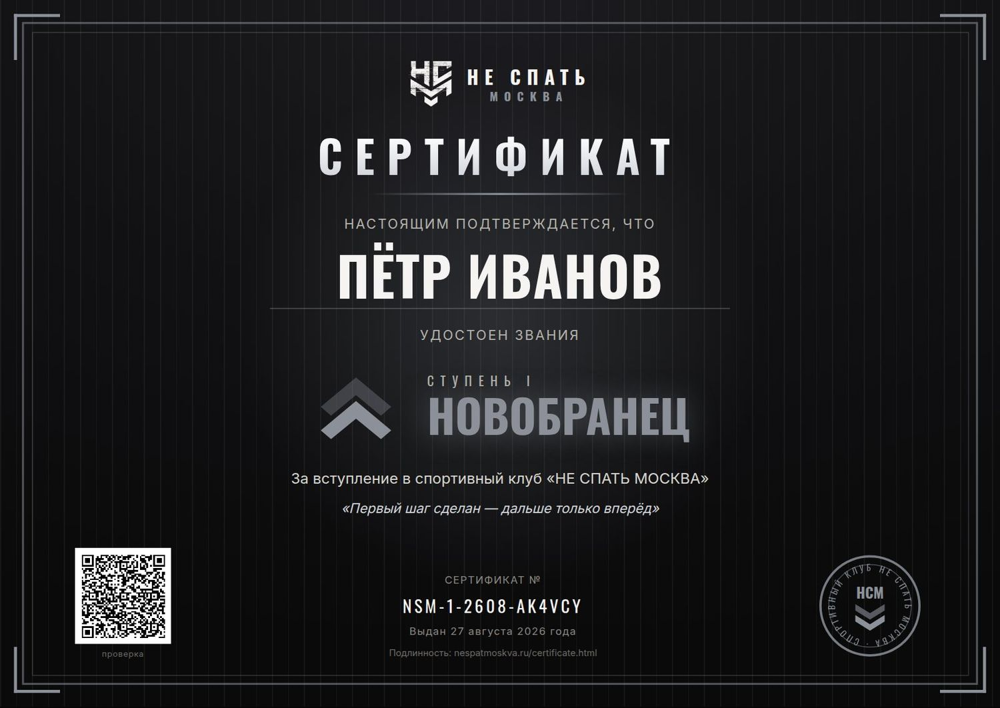
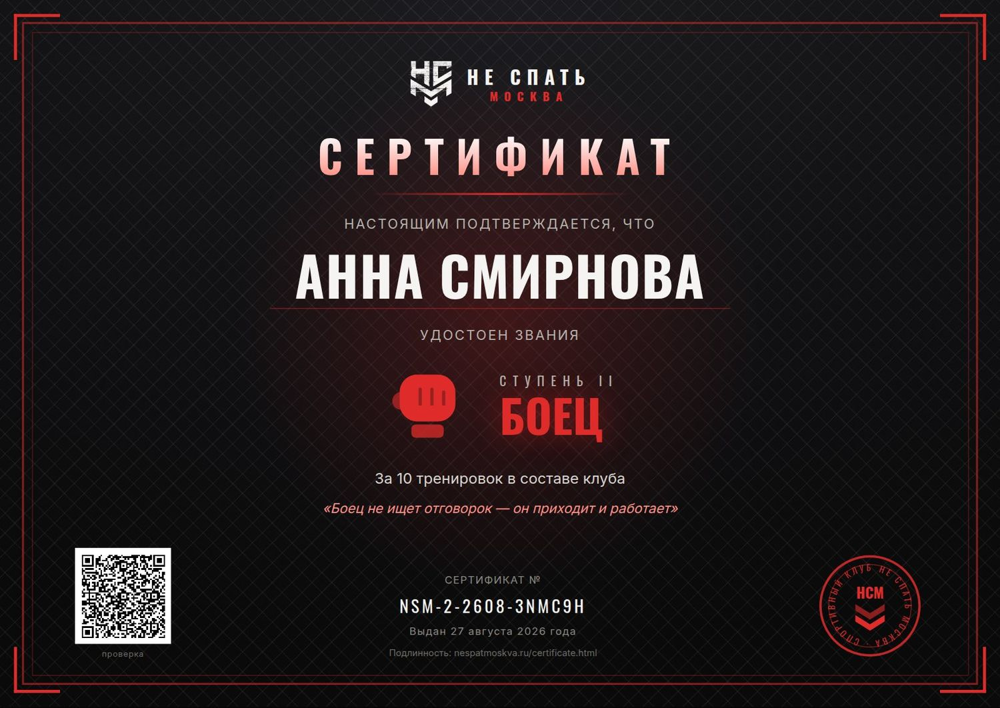
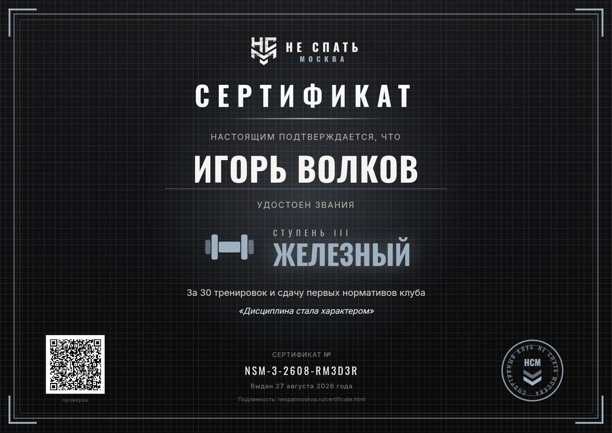
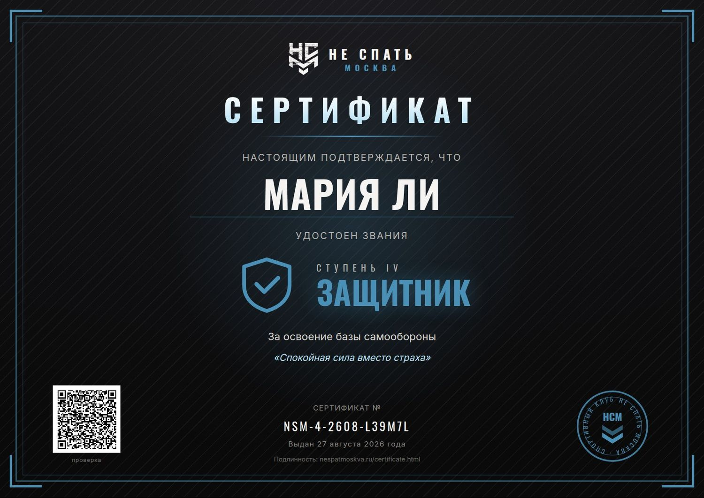
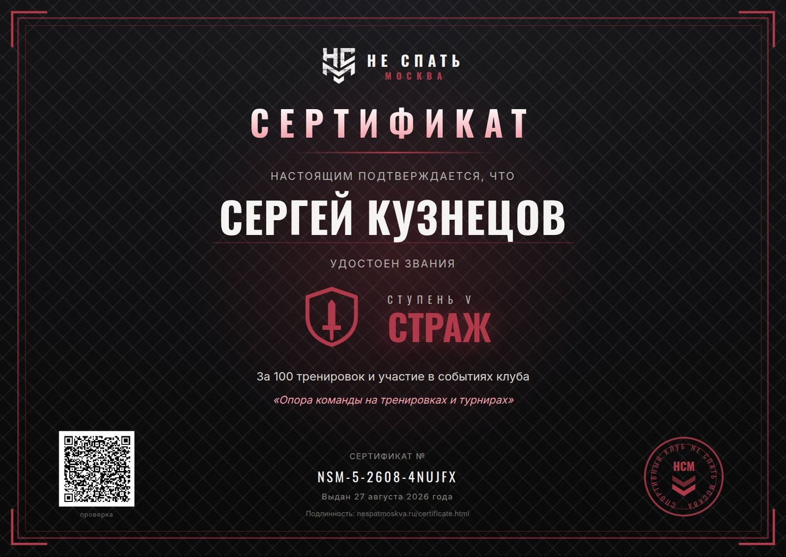
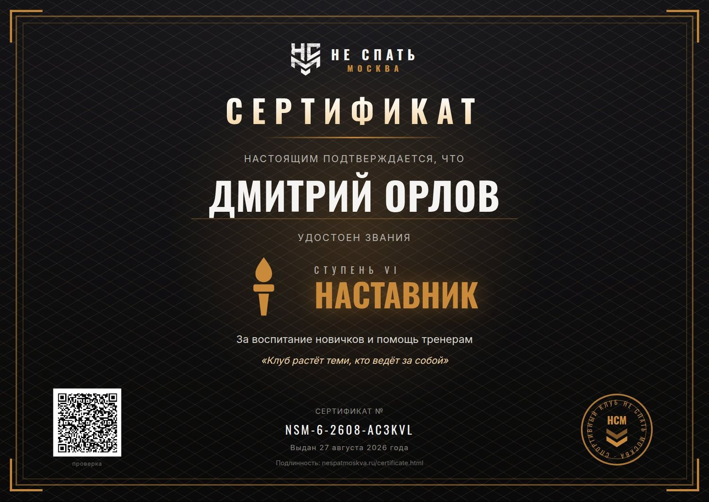
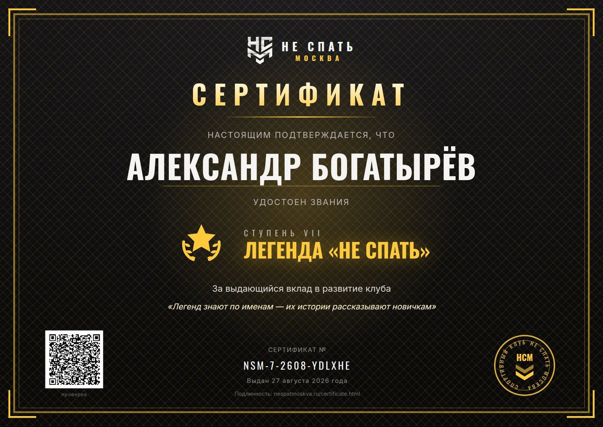
Участник потерял ссылку. Что делать?
Выдайте сертификат заново с теми же данными — номер получится тот же самый, это тот же сертификат. Или найдите запись в списке «Выданные сертификаты» и скопируйте ссылку оттуда.
Ошиблись в имени. Можно исправить?
Отредактировать выданный сертификат нельзя — имя защищено подписью. Просто выдайте новый с верным именем, а старую ссылку не отправляйте.
Сколько сертификатов можно выдать?
Сколько угодно. Ни лимитов, ни оплаты: сертификат живёт в ссылке, сервер для него не нужен.
Можно выдавать с телефона?
Да, студия работает и на телефоне: форма и предпросмотр подстраиваются под экран.
Кто-то узнает пин-код — что будет?
Он сможет открыть студию и выпустить сертификат. Пин защищает от случайного посетителя, а не от взлома: сайт статический, и код лежит в исходниках страницы. Не публикуйте адрес студии и пин в открытых чатах.
Можно ли подделать сертификат?
Переписать имя или звание в ссылке не выйдет — подпись сразу перестанет сходиться, и страница покажет «Подлинность не подтверждена». Полная защита от подготовленного специалиста потребовала бы сервера; для сертификатов клуба текущего уровня достаточно.
Что нельзя менять в системе?
Ключ подписи в файле assets/js/cert-core.js. Если его изменить, все ранее выданные сертификаты перестанут подтверждаться. Об этом же предупреждает комментарий в самом файле.